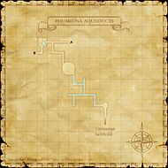
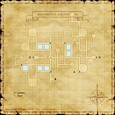
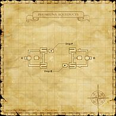

Description
Phomiuna Aqueducts is a dungeon in Tavnazian Archipelago.
Map

Involved in Quests / Missions
| Quest / Mission | Type | Starter | Location |
|---|---|---|---|
| Brygid the Stylist Returns | General | Brygid | Bastok Markets (K-9) |
| Knocking on Forbidden Doors | General | Enaremand | Tavnazian Safehold (J-7) |
| Secrets of Ovens Lost | General | Jonette | Tavnazian Safehold (G-9) |
| Tuning In | General | Leepe-Hoppe | Windurst Waters (J-9) |
| X Marks the Spot | General | Despachiaire | Tavnazian Safehold (K-10) |
Notorious Monsters
| Name | Level | Drops | Steal | Family | Spawns | Notes |
|---|---|---|---|---|---|---|
| Tres Duendes | — | Chiroptera Dagger Niokiyotsuna Vampiric Claws | — |  Bat TriosImage source Bat TriosImage source | — | Assisted by: Duendes' Amoroso (45); A |
| Eba | 48 | Fomor Tunic | — |  FomorsImage source FomorsImage source | — | A, L, H, HP |
| Mahisha | 50 | Sinister Mask | — |  TauriImage source TauriImage source | — | A, L, T(S) |
Regular Monsters


Event Monsters
| Name | Level | Drops | Steal | Family | Spawns | Notes |
|---|---|---|---|---|---|---|
| Minotaur | 47 | — | — | TauriImage source | 1 | Killed for Mission: Distant Beliefs; A, L, T(S) |
Maps


Story walkthroughs in this area
| Story | Mission / quest |
|---|---|
| CoP 2-2 | The Lost City |
| CoP 2-3 | Distant Beliefs |
References
External references describe their own server or retail rules. Documented Zenith changes take precedence.
Map credits: Map 1 — HorizonXI Wiki · Map 2 — HorizonXI Wiki · Map 3 — HorizonXI Wiki. Original game maps © SQUARE ENIX; redrawn maps retain the credited authorship and license.


Additional level-75 reference






|
Called the City of Water, these expansive aqueducts were constructed by the Tavnazian Marquisate. Before the war, the waters were drawn on by most of the city's main facilities, but now only a small percentage of the canals remains. The Phomiuna Aqueducts are connected to the underground sacrarium of the fallen cathedral. However, due to the powerful wards erected by a certain cardinal, the state of the sacrarium's interior is known to but a few. And there is also the question of the holy artifact said to be enshrined within its walls....
Connecting Areas
Involved in Quests/Missions
| |||||||||||||||||||||||||||||||||||||
Notorious Monsters Found Here
|
Name |
Level |
Drops |
Steal |
Family |
Spawns |
Notes | |||||||
| Duendes' Amoroso | 45 - 45 | Fomor | 1 Assists: Tres Duendes |
A, L, S, HP | |||||||||
| Eba | 48 - 48 | Fomor | 1 | A, L, HP | |||||||||
| Mahisha | Unknown | Taurus | 1 | A, L, T(S) | |||||||||
| Minotaur | Unknown | Taurus | 1 | A, L, T(S) | |||||||||
| Tres Duendes | Unknown | Bat Trio | 1 Assisted By: Duendes' Amoroso |
A | |||||||||
|
HP = Detects Low HP; M = Detects Magic; Sc = Follows by Scent; T(S) = True-sight; T(H) = True-hearing JA = Detects job abilities; WS = Detects weaponskills; Z(D) = Asleep in Daytime; Z(N) = Asleep at Nighttime | |||||||||||||
Mobs Found Here
|
Name |
Level |
Drops |
Steal |
Family |
Spawns |
Notes | |||||||
| Addled Tumor | 36 - 38 | Doomed | 1 | A, H, HP | |||||||||
Air Elemental
|
50 - 50 | Elemental | 2 | M | |||||||||
| Bavarois | 39 - 41 | Slime | 1 Spawned By: Fishing |
A, H | |||||||||
| Big Jaw | 37 - 39 | Pugil | 6 | A, H | |||||||||
| Canal Bats | 41 - 46 | Bat Trio | 11 | L, H | |||||||||
Dark Elemental
|
50 - 50 | Elemental | 3 | M | |||||||||
| Diremite | 42 - 48 | Diremite | 26 | ||||||||||
| Fomor Bard | 41 - 48 | Fomor | 7 Respawn: 14 minutes |
A, L, H, HP | |||||||||
| Fomor Beastmaster | 41 - 48 | Fomor | 2 Respawn: 14 minutes Assisted By: Fomor's Bat |
A, L, H, HP | |||||||||
| Fomor Black Mage | 41 - 48 | Fomor | 4 Respawn: 14 minutes |
A, L, H, HP | |||||||||
| Fomor Dark Knight | 41 - 48 | Fomor | 3 Respawn: 14 minutes |
A, L, H, HP | |||||||||
| Fomor Dragoon | 41 - 48 | Fomor | 2 Respawn: 14 minutes Assisted By: Fomor's Wyvern |
A, L, H, HP | |||||||||
| Fomor Monk | 41 - 48 | Fomor | 5 Respawn: 14 minutes |
A, L, H, HP | |||||||||
| Fomor Ninja | 41 - 48 | Fomor | 4 Respawn: 14 minutes |
A, L, H, HP | |||||||||
| Fomor Paladin | 41 - 48 | Fomor | 4 Respawn: 14 minutes |
A, L, H, HP | |||||||||
| Fomor Ranger | 41 - 48 | Fomor | 8 Respawn: 14 minutes |
A, L, H, HP | |||||||||
| Fomor Red Mage | 41 - 48 | Fomor | 5 Respawn: 14 minutes |
A, L, H, HP | |||||||||
| Fomor Samurai | 41 - 48 | Fomor | 4 Respawn: 14 minutes |
A, L, H, HP | |||||||||
| Fomor Summoner | 41 - 48 | Fomor | 2 Respawn: 14 minutes Assisted By: Fomor's Elemental |
A, L, H, HP | |||||||||
| Fomor Thief | 41 - 48 | Fomor | 6 Respawn: 14 minutes |
A, L, H, HP | |||||||||
| Fomor Warrior | 41 - 48 | Fomor | 6 Respawn: 14 minutes |
A, L, H, HP | |||||||||
| Fomor's Bat | 36 - 43 | Giant Bat | 2 Assists: Fomor Beastmaster |
H | |||||||||
| Fomor's Elemental | 36 - 43 | Elemental | 2 Assists: Fomor Summoner |
H, M | |||||||||
| Fomor's Wyvern | 36 - 43 | Wyvern | 2 Assists:Fomor Dragoon |
||||||||||
| Foul Meat | 45 - 47 | Doomed | 7 | A, H, HP | |||||||||
| Freshwater Trepang | 30 - 34 | Slime | 1 Spawned By: Fishing |
A, H | |||||||||
| Gloop | 36 - 40 | Slime | 6 Respawn:14 minutes |
A, H, Sc | |||||||||
| Hell Bat | 44 - 46 | Giant Bat | 8 | L, H | |||||||||
| Makara | 44 - 47 | Pugil | 18 | L, H | |||||||||
| Ogreish Rissoto | 35 - 37 | Slime | 1 Spawned By: Fishing |
A, H | |||||||||
| Oil Spill | 44 - 47 | Slime | 9 | A, H, Sc | |||||||||
| Sponge | 25 - 29 | Slime | 1 Spawned By: Fishing |
A, H | |||||||||
| Stegotaur | 44 - 48 | Taurus | 24 | A, L, T | |||||||||
| Taurus | 37 - 38 | Taurus | 3 | A, L, T | |||||||||
Thunder Elemental
|
45 - 50 | Elemental | 2 | M | |||||||||
| Vampire Bat | 36 - 38 | Giant Bat | 2 | L, H | |||||||||
| Water Pumpkin | 25 - 29 | Slime | 1 Spawned By: Fishing |
A, H | |||||||||
|
HP = Detects Low HP; M = Detects Magic; Sc = Follows by Scent; T(S) = True-sight; T(H) = True-hearing JA = Detects job abilities; WS = Detects weaponskills; Z(D) = Asleep in Daytime; Z(N) = Asleep at Nighttime | |||||||||||||
Adapted from Eden Wiki: Phomiuna Aqueducts · Contributors and history · CC BY-SA 4.0. Revision 45740. Layout, links and optional background text adapted for Zenith.